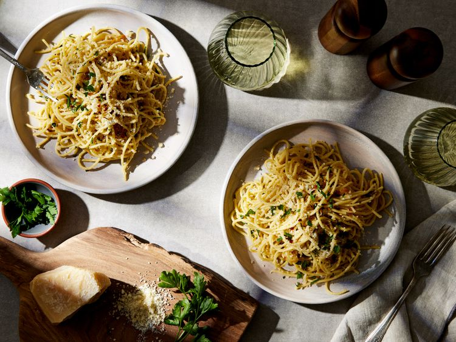

Aglio Olio

Description
Spaghetti aglio e olio is a classic Italian pasta dish born in Naples, prized for its simplicity and bold flavor. The sauce is made by gently sautéing thinly sliced garlic in fragrant extra‑virgin olive oil until golden, then tossing in red pepper flakes for a gentle kick. Al dente spaghetti is added directly into the skillet, allowing each strand to be coated in the garlicky, slightly spicy oil. A sprinkle of chopped fresh parsley and a grind of black pepper brightens the dish and adds color.
Despite having just a handful of ingredients, aglio e olio delivers a deeply satisfying umami experience—the mellow sweetness of garlic, the warmth of chili, and the silky richness of olive oil all harmonize perfectly. Serve it immediately, garnished with freshly grated Parmesan or Pecorino if you like, alongside a crisp green salad or roasted vegetables. It’s the ultimate weeknight meal: ready in minutes yet bursting with authentic Italian taste.
Ingredients
- 1 pound uncooked spaghetti
- ½ cup olive oil
- 6 cloves garlic, thinly sliced
- ¼ teaspoon red pepper flakes, or to taste
- salt and freshly ground black pepper to taste
- ¼ cup chopped fresh Italian parsley
- 1 cup finely grated Parmigiano-Reggiano cheese
Steps
- Gather all ingredients.
- Bring a large pot of lightly salted water to a boil. Cook spaghetti in the boiling water, stirring occasionally until cooked through but firm to the bite, about 10 to 12 minutes. Drain and transfer to a pasta bowl.
- While the pasta is cooking, combine olive oil and garlic in a cold skillet.
- Cook over medium heat to slowly toast garlic, about 10 minutes. Reduce heat to medium-low when olive oil begins to bubble. Cook and stir until garlic is golden brown, about another 5 minutes. Remove from heat.
- Stir red pepper flakes, salt, and black pepper into pasta.
- Pour in hot olive oil and garlic, and sprinkle on Italian parsley and half of the Parmigiano-Reggiano cheese; toss until combined.
- Serve pasta topped with the remaining Parmigiano-Reggiano cheese.
Home